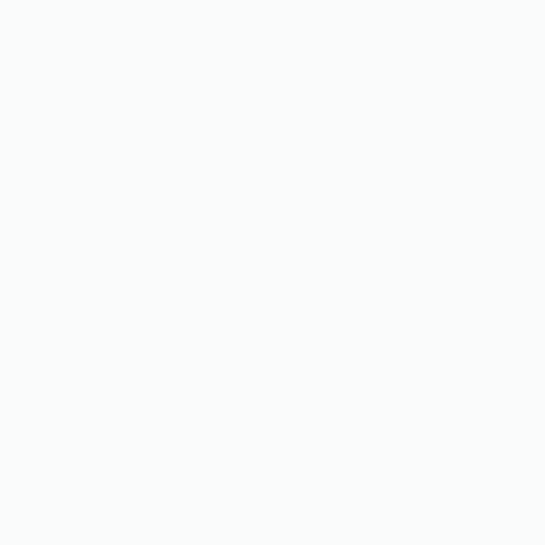

{{ post.creator.username }}

{% with post.liked_users.count as likes_count %}
{% if likes_count > 1 %}
{{ post.liked_users.count }} likes
{% else %}
{{ post.liked_users.count }} like
{% endif %}
{% endwith %}
{{ post.creator.username }}
{{ post.caption }}
{% if comments_count > 1 %}
View all {{ comments_count }} comments
{% else %}
View {{ comments_count }} comment
{% endif %}
17 HOURS AGO